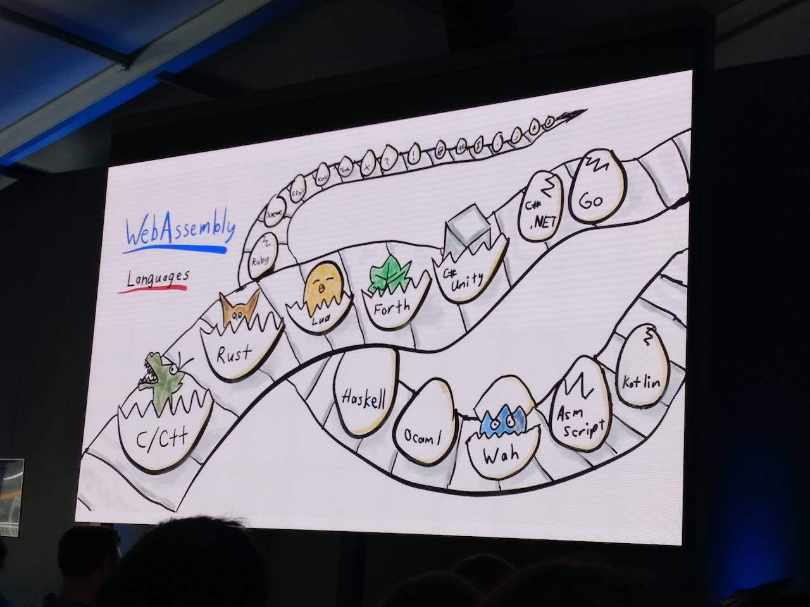

本日のテーマ: wasm by Go
本資料について
wasm とは
各言語の対応状況
Go の対応状況
ところで GopherJS
実際試してみる
Appendix
ベンチマーク
サンプルで使った (取得した) ソース
参考文献
Published with GitBook
各言語の対応状況
各言語の wasm 対応状況
Google I/O 2018 のブログ記事
より、

サポートされそうなやつは、卵にヒビが入ってる
見たところ Kotlin、Asm script、C# .NET、あと Ruby あたりにもヒビが入っている
Go もヒビ入っている
results matching "
"
No results matching "
"